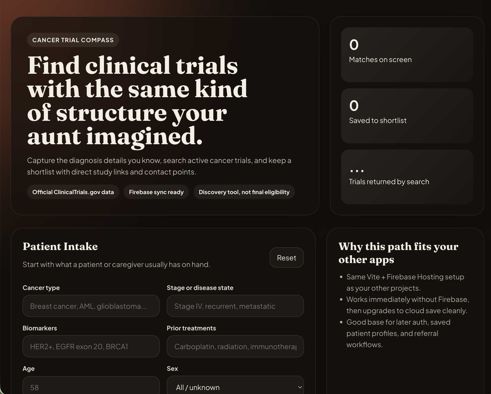
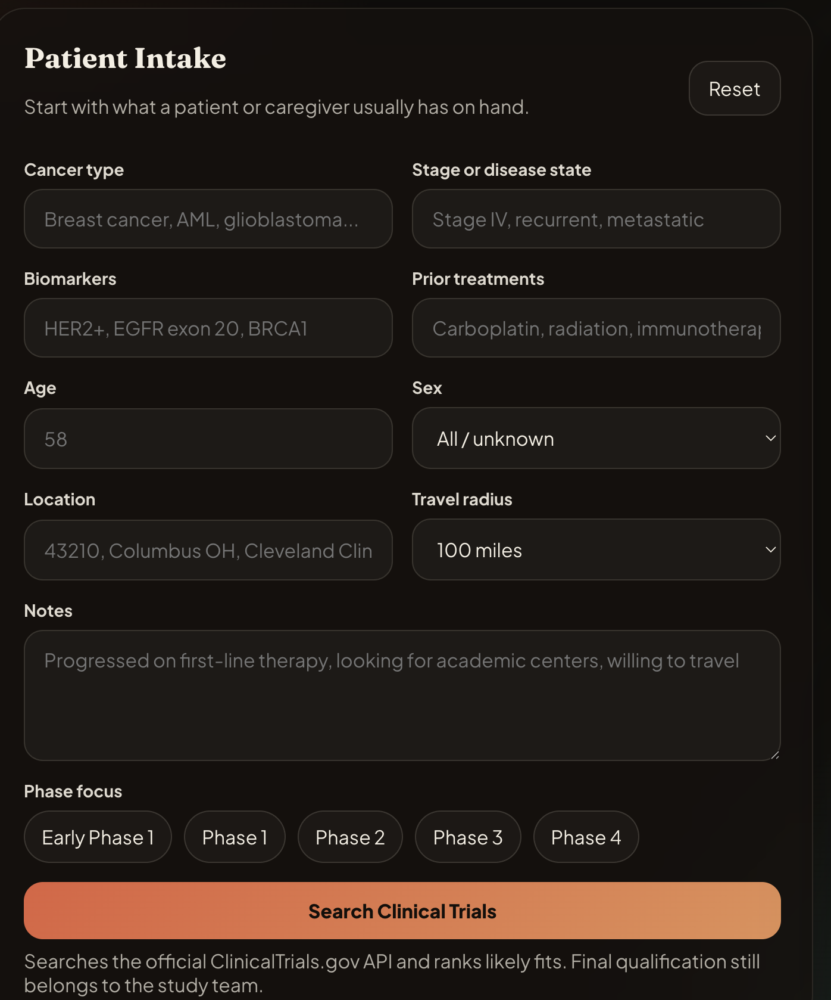

My Aunt Jane is a nurse, a fan of ChatGPT, and the kind of person who notices gaps in the system because she has spent real time around patients and families. She had an app idea years ago that always stuck with her: a simple way for someone with a cancer diagnosis to enter the details they knew — cancer type, stage, biomarkers, prior treatments, age, location — and see which hospitals nearby were running clinical trials.
The idea came from something that never sat right with her. Some people hear about clinical trials. Some people do not. Sometimes it depends on the doctor, the hospital, geography, timing, or whether the patient knows the right questions to ask. Jane thought there should be a more universal starting point.
That hit home for me too. Our grandmother died of cancer. Most families have some version of this story. When someone is sick, the system can feel like a maze, and the burden often falls on the patient or caregiver to find the next question, the next phone number, the next possible option.
What if a patient could enter what they know and get a list of active clinical trials within driving distance, with links and contacts to ask whether they might qualify?
That was Jane's idea. I wanted to see how far I could get with it using AI.

The app is called Cancer Trial Compass. It is not a medical device, and it does not tell anyone they qualify for a trial. That would be irresponsible. The goal is narrower and more realistic: help a patient or caregiver find trials that might be worth asking about.
The current version lets someone enter:
It searches the official ClinicalTrials.gov API, filters for active or opening trials, ranks likely matches, shows nearby listed sites, and links directly to the study page. I also added a shortlist and a "contact packet" button, which generates a clean note a patient could send to their oncologist or a trial coordinator.

I built this with ChatGPT's Codex coding environment. I have been using the newer Codex models in ChatGPT and have been impressed by how much real software work can now happen from plain English: scaffold the app, wire Firebase, call the API, test five cancer/location scenarios, find bugs, fix the search logic, deploy to Firebase Hosting.
The stack is the same kind of setup I have used for other AI-assisted projects: React, Vite, Firebase, and a public data source. Codex did not just write a pretty screen. It helped inspect the ClinicalTrials.gov API behavior, run smoke tests for breast cancer in Columbus, EGFR lung cancer in New York, glioblastoma in California, AML in Houston, and pediatric leukemia near Philadelphia, then tighten the logic when the first version returned noisy results.
That is the part that still feels strange to me. The tool is not just autocomplete. It can act like a junior developer, QA tester, deployment assistant, and sometimes a product manager. I can ask it to test the app, take notes, find bugs, improve the experience, and redeploy. It will actually do a lot of that work.
It is also not magic. One session went off the rails on me. I started seeing strange characters and nonsense text, and I asked Claude Code what was happening. Its read was basically: the model had gotten trapped in a weird loop. That was a useful reminder. These tools are powerful, but they still need a person steering, checking, and stopping them when they drift.
Clinical trial eligibility is complicated. A real trial may depend on lab values, organ function, performance status, exact treatment sequence, prior adverse events, tumor genetics, and dozens of other details. A website should not pretend to decide that on its own.
So the app is framed carefully. It says "likely match" and "coordinator review," not "you qualify." The right next step is still a conversation with the oncology team or the trial site. The app's job is to make that conversation easier to start.
Cancer Trial Compass is a personal AI project and search prototype. It is not medical advice, not a medical device, and not connected to my professional work. It is an experiment in whether AI-assisted software can make a useful idea easier to explore.
A lot of the apps I have built with AI started as small personal ideas: a drink tracker, a movie tracker, a sports model. This one felt different because the original idea came from Jane's experience as a nurse and from a real family history with cancer.
I do not know whether this becomes anything more than a prototype. But I do know this: a few years ago, Jane's idea would have required hiring a developer, writing a spec, finding a data source, paying for infrastructure, and probably losing momentum somewhere along the way.
This time, we talked about it, built a working version, tested it against real data, and deployed it online in the same day.
That is what keeps pulling me into these AI tools. Not because they replace expertise. They do not. But because they let ordinary people take an idea that would normally stay stuck in conversation and push it far enough into reality that you can actually react to it.
Jane had the idea. Codex helped me build the first version. Now the question is whether it can become more useful.
Open Cancer Trial Compass → ← Back to Blog